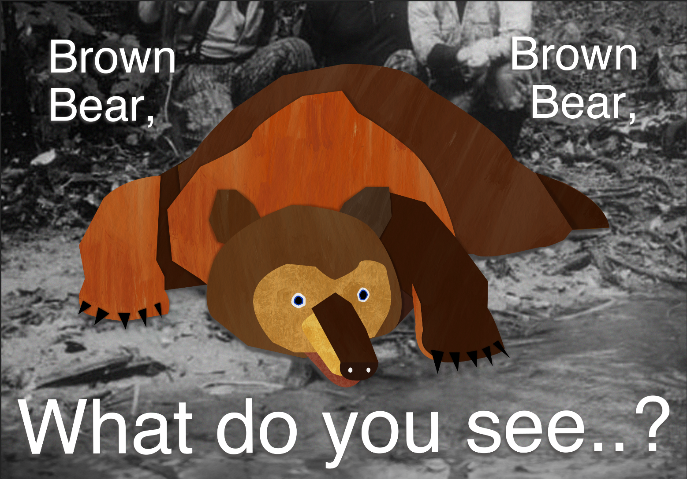
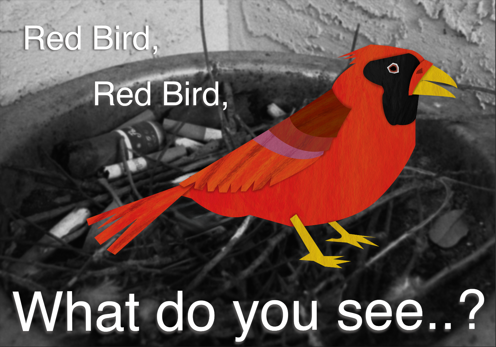
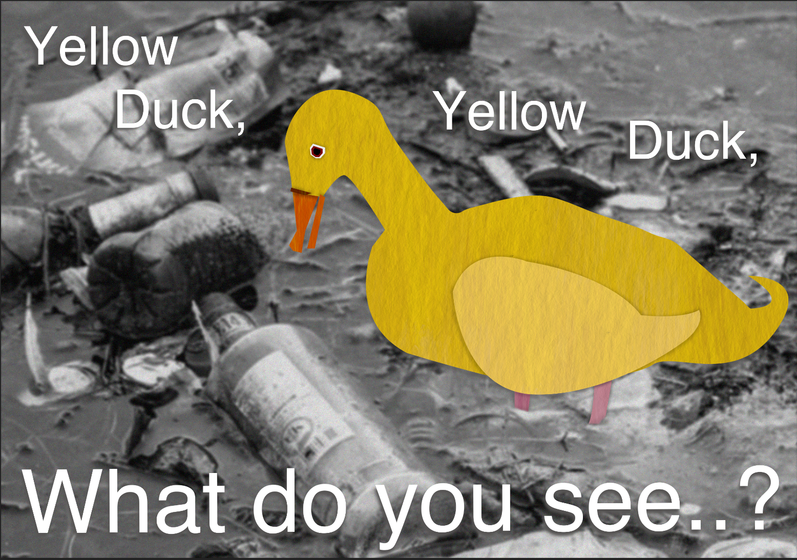
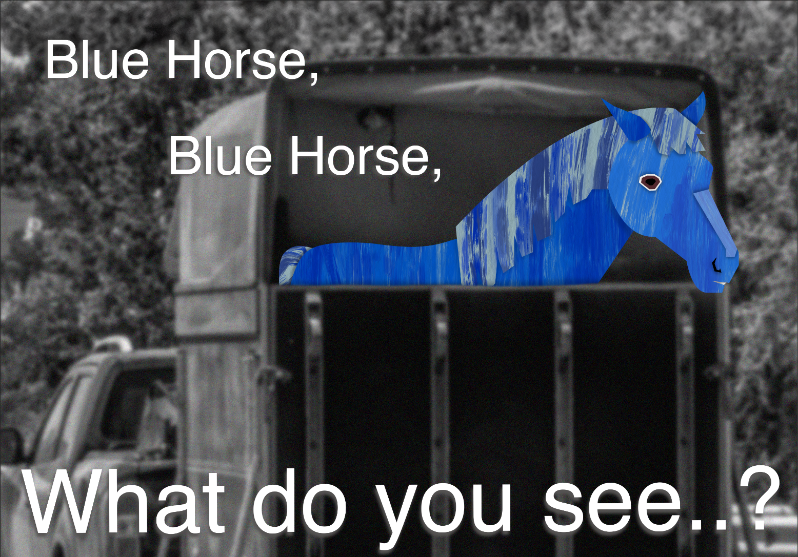
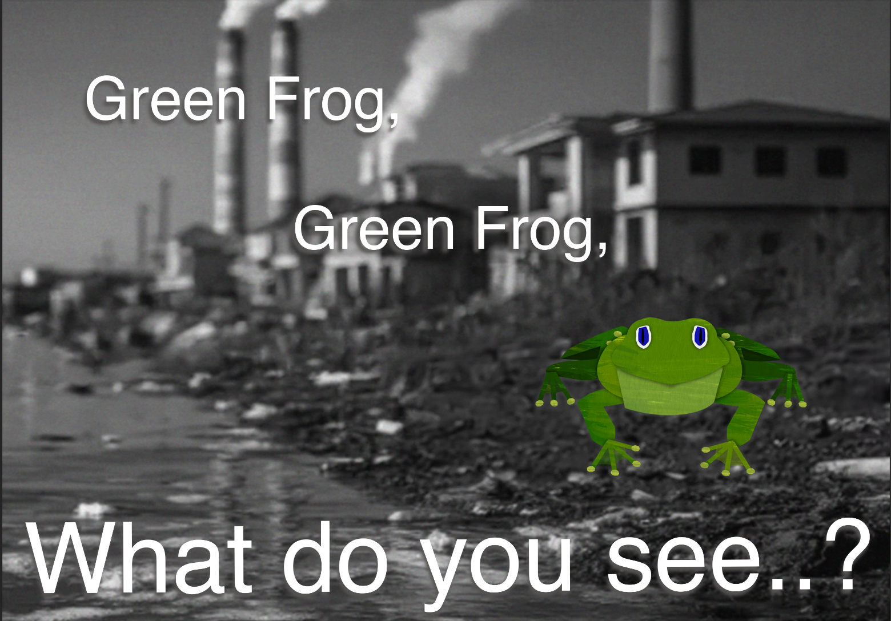
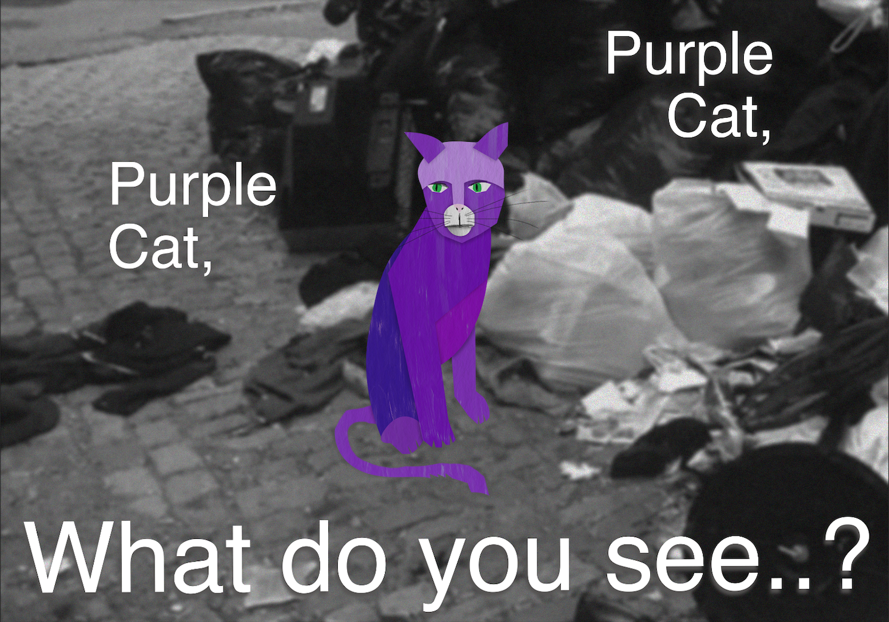
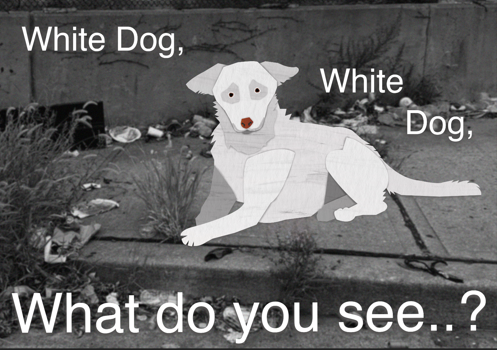
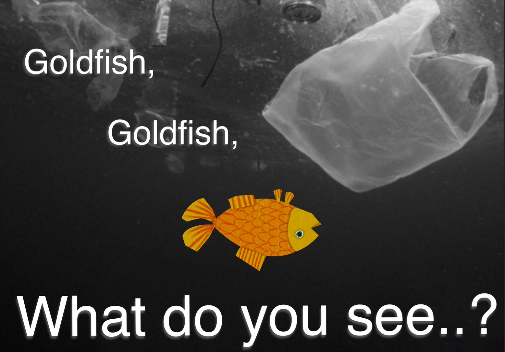

"What I See"
2025









"What I See" is a project that uses the power of nostalgia to address the global crisis of habitat destruction. By utilizing the familiar imagery from the book, Brown Bear, Brown Bear, What Do You See?, I’ve created a series of posters that visualizes the degradation of the natural world. Especially since the book's original publication. These posters targets the generation of kids who grew up with this book, using emotional imagery to bridge the gap between childhood memories and environmental responsibility. It serves as both a reflection on habitat loss and a potential catalyst for positive conservation efforts.